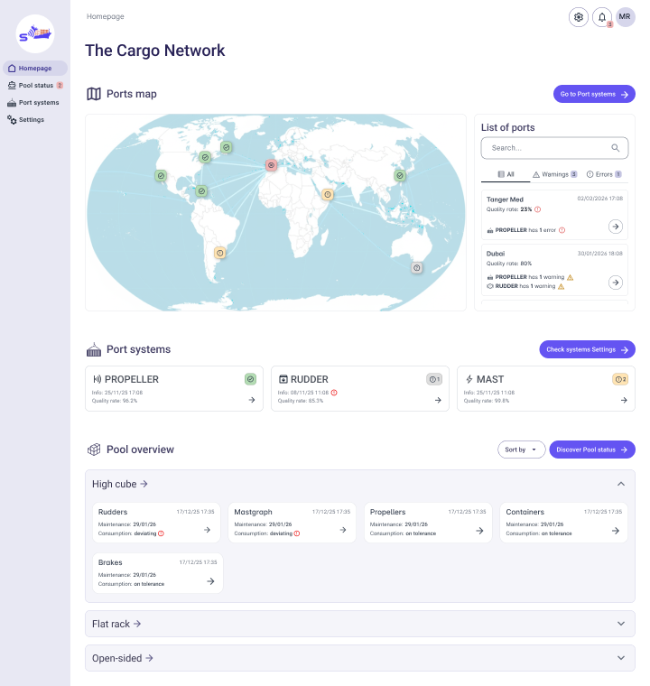

Digital Platform Assessment & Redesign
Role: UX & UI Designer, Accessibility specialist
Scope: Analysis, Usability Review, Information Architecture, Wireflow & Wireframing
Context & Methodology
The Esse Diagnostic Systems (fictional name due to NDA restrictions) platform is an integrated solution designed to support the acquisition, management, and sharing of measurement data related to cargo, containers, rudders, and malt within a maritime network environment. The objective of the project was to conduct a comprehensive assessment of the existing system (as-is) and define a strategic redesign proposal (to-be), aimed at improving usability, structural clarity, and overall user experience.
I contributed to a deep analysis phase focused on understanding both the technical architecture and the current user interface ecosystem.
A systematic collection of screenshots and annotations was carried out to document navigation flows, functionalities, and interaction patterns. This process enabled the reconstruction of a functional map of the entire product.
Personas, Roles & Usage Contexts
End-users were mapped according to roles, operational responsibilities, and real usage scenarios. This helped define user needs, behavioral patterns, and environmental constraints influencing interaction with the system. Then, we conducted an expert usability evaluation, focusing on ergonomics, navigation efficiency, information hierarchy, and users’ cognitive load. The UX review was conducted on FigJam space. Low- and mid-fidelity wireframes were developed for key interfaces, redefining layout structure, interaction patterns, and content hierarchy to ensure clarity, consistency, and scalability and to smoothly show our client all the possible paths. Following the assessment phase, I collaborated on the definition of the new interface structure, starting by the fundation of the tailor-made UI kit, inspired to Angular Material UI. The renewed navigation model was designed and presented as a comprehensive wireflow, outlining the overall system logic and user journeys across modules.

High-Fidelity Interface & System Architecture
The proposed high-fidelity interface is structured into three main macro-sections, initially designed to support a “super user” profile and conceived to be customizable for different user roles in terms of features, permissions, and access levels.
Design Principles Applied
Across every section and page, the redesign focused on:
- Structural clarity and modular scalability
- Immediate visual feedback for critical states
- Progressive disclosure of complexity
- Data-driven decision support
- Accessibility compliance
- Role-based customization potential
The result is a cohesive, scalable, and future-proof digital ecosystem that transforms a technically complex diagnostic infrastructure into an intuitive and strategically navigable platform.
In the process, I started by analysing the As-is mobile and desktop versions of the website to study its architecture, understand its usability problems and find out the potential of the website. Below, the comparison between my design proposal and the current mobile version.
In the future, it could be interesting to create the English version and the dark-mode of the website.
As-is mobile version of SMC website
As-is mobile version of SMC website